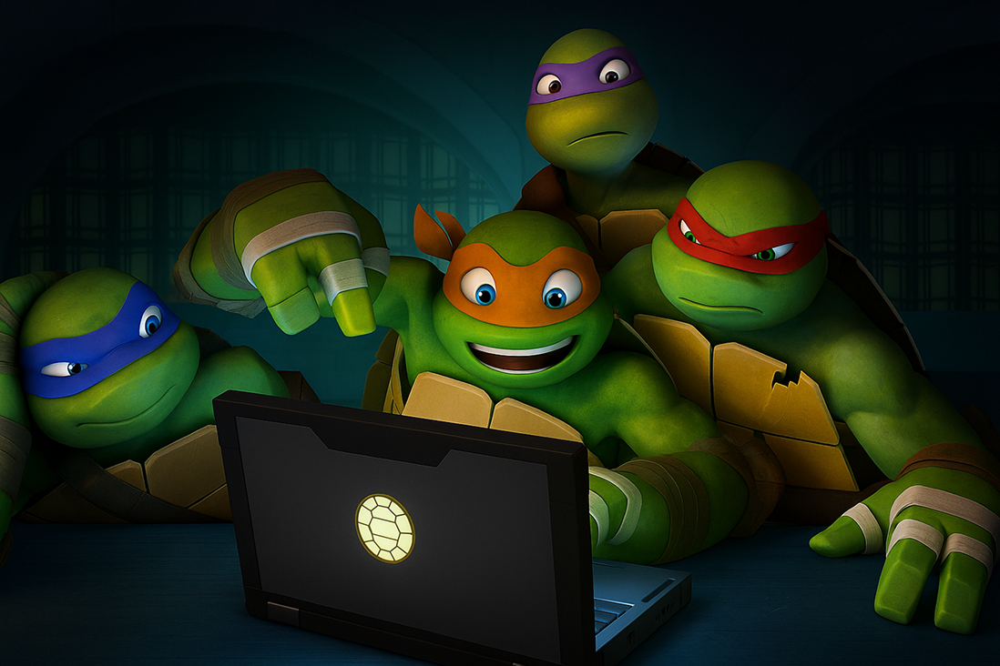

Time
As Splash!
Gabi
CEO
Malu
CEO
Beca
CEO

Sofi
CEO
Sobre nós
Somos alunas do 2º ano de Informática para Internet no Instituto Federal de Educação, Ciência e Tecnologia de São Paulo - Turma 2. Criamos este projeto nas aulas de Desenvolvimento Web com as professoras Amanda Krishna e Geza Rangel, tendo como intuito conscientizar sobre os problemas e causas que ameaçam as tartarugas marinhas. Criamos um site com informações com base no Projeto TAMAR (que é uma fundação brasileira que atua na conservação de tartarugas marinhas através de pesquisa, educação ambiental e inclusão social). Adaptamos, com base no jogo T-Rex Game, um jogo que conscientiza sobre o acúmulo de plástico — um dos maiores problemas ambientais da atualidade. Todos os anos, milhões de toneladas de lixo plástico chegam ao mar, poluindo o habitat marinho. As tartarugas são fortemente afetadas por isso: muitas confundem sacolas plásticas com águas-vivas, seu alimento natural, e acabam engolindo o material, o que pode causar sufocamento, bloqueios no sistema digestivo e até a morte. Além disso, elas podem ficar presas em redes e outros resíduos, dificultando sua locomoção e sobrevivência. Nosso jogo se baseia em uma tartaruga marinha pulando os obstáculos (sacolas e garrafas plásticas) no fundo do oceano, demonstrando o perigo que elas enfrentam.